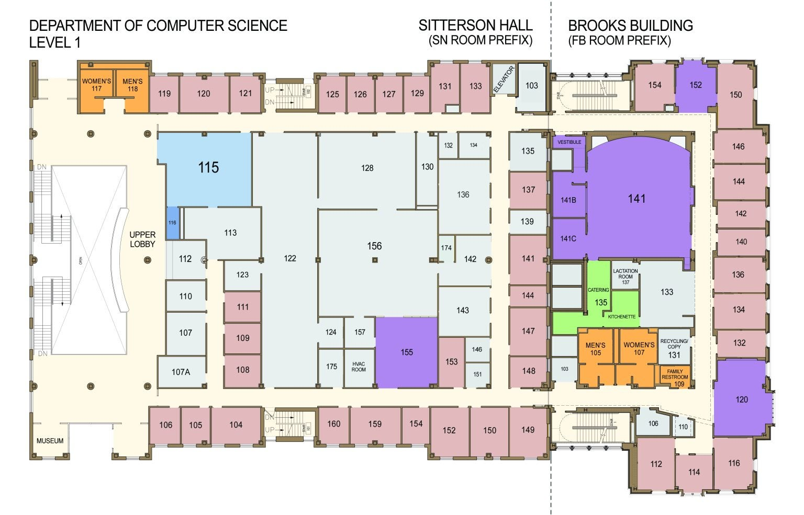
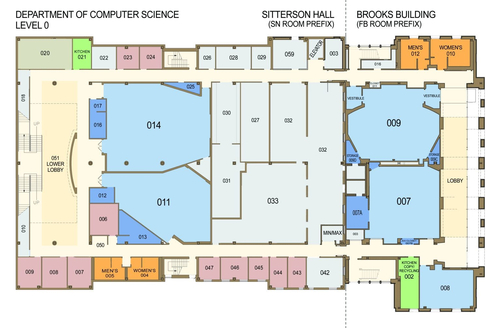
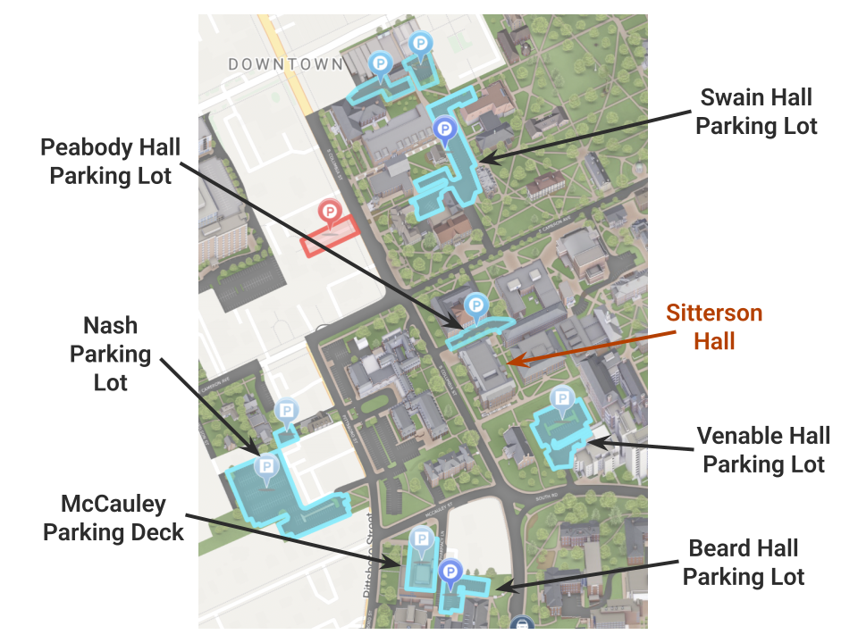

Venue Information
 Sitterson Hall
232 S Columbia St, Chapel Hill, NC 27514
Parking Information
Nearby Parking Lots:
- Swain Lot
- Venable Lot
- Bell Tower Deck
- Beard Lot
- McCauley Deck
The parking spaces shown above are within a 5-minute walk of Sitterson Hall. Parking is free on the weekends, so you can park in any lot on UNC’s campus. However, be sure to check whether the lot you park in is reserved for any campus weekend events. There will be signage at each lot with clarification.
For more parking options on campus, visit UNC Parking Map.
There is a bus stop right outside Sitterson Hall. For more information on bus routes, download the Chapel Hill Transit app or visit Chapel Hill Transit Routes.
Frequently Asked Questions (FAQ)
Do I need to be Latino/Hispanic to attend?
Nope! SolHacks is open to everyone, regardless of background. While we center around Latino representation in tech, we welcome anyone who supports our mission and wants to be part of an inclusive and diverse hackathon experience.
What is a hackathon?
A hackathon is an event where people come together to create tech projects in a short period, usually 24 hours. Participants can build apps, websites, hardware projects, or any innovative tech solution. No prior experience is needed, just a willingness to learn, collaborate, and have fun!
I want to attend but registration is closed. Can I still register?
Please email unc.latinosintech@gmail.com so that we can open the registration form for you!
What if I can't code?
No problem! Hackathons aren't just for programmers. Anyone is welcome. You can learn new skills, contribute to brainstorming, or even focus on project presentation and pitching. We'll also have beginner-friendly workshops to help you get started.
How do teams work?
Teams can have up to 4 members. You can sign up with a team or form one at the event. If you don’t have a team, we’ll have a team formation session to help you find teammates who share your interests!
Can I use old code?
To keep the competition fair, you can’t submit projects with pre-existing code. However, open-source libraries, frameworks, and APIs are allowed. If you have questions about what qualifies, just ask us!
Are there places to sleep at the event?
Yes! We’ll have designated rest areas in Sitterson Hall and air mattresses for participants who need to take a break. Bring a sleeping bag or blanket for extra comfort.
Where do I park?
The closest parking options to Sitterson Hall are Venable Lot, McCauley Deck, and Beard Lot. Parking is free on weekends. We recommend arriving early to secure a spot.
Is this hackathon in-person or hybrid?
SolHacks is an in-person event. All activities, workshops, and networking opportunities will take place on-site at Sitterson Hall.
Do I have to be present all day?
No! While we encourage participants to stay for the full experience, we understand that schedules can be tricky. If you need to step out, just make sure your team is aware and plan accordingly so you don’t miss important milestones.
Who can hack?
SolHacks is open to college and high school students (18 or older) from any background, as well as recent graduates. If you're passionate about tech and innovation, you're welcome to join!
Is this a Campus Life Experience?
Yes! UNC-CH students can scan QR codes around the event to receive credit.
What if I can't code?
No problem! Hackathons aren’t just for programmers. Anyone is welcome. You can learn new skills, contribute to brainstorming, or even focus on project presentation and pitching. We’ll also have beginner-friendly workshops to help you get started.
You didn’t answer my question!
We’re happy to help! Feel free to reach out to us at unc.latinosintech@gmail.com or visit our Slack to get in touch with our team.